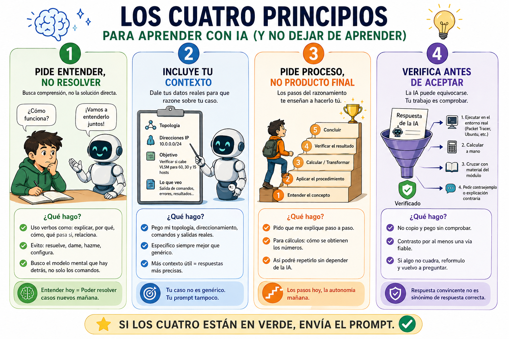
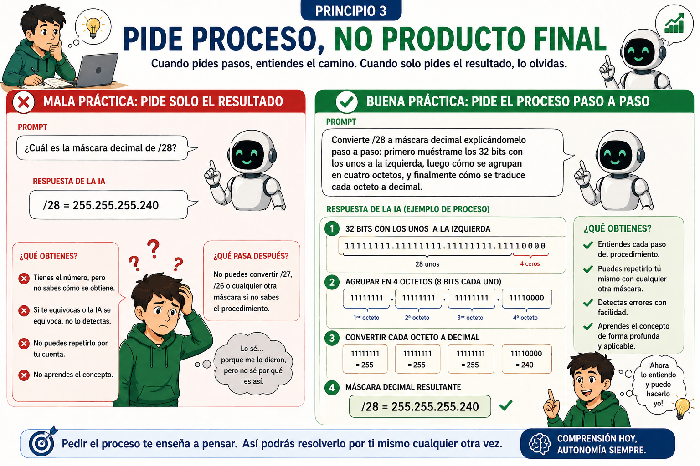
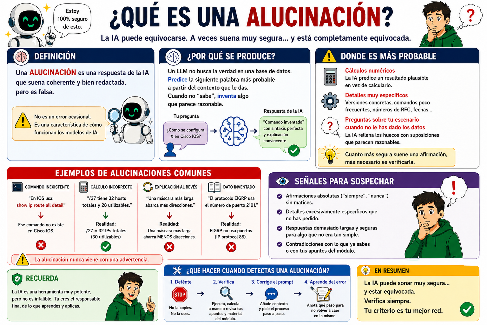
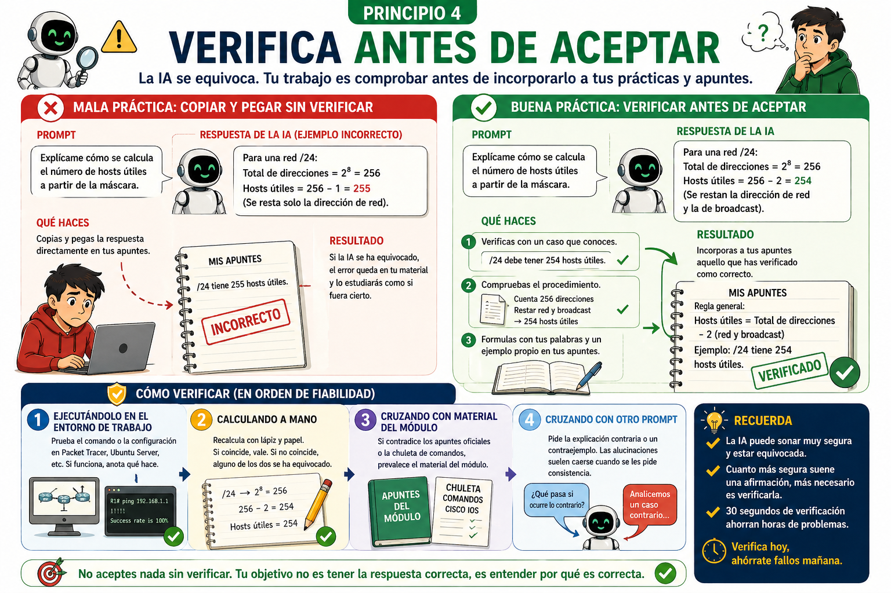
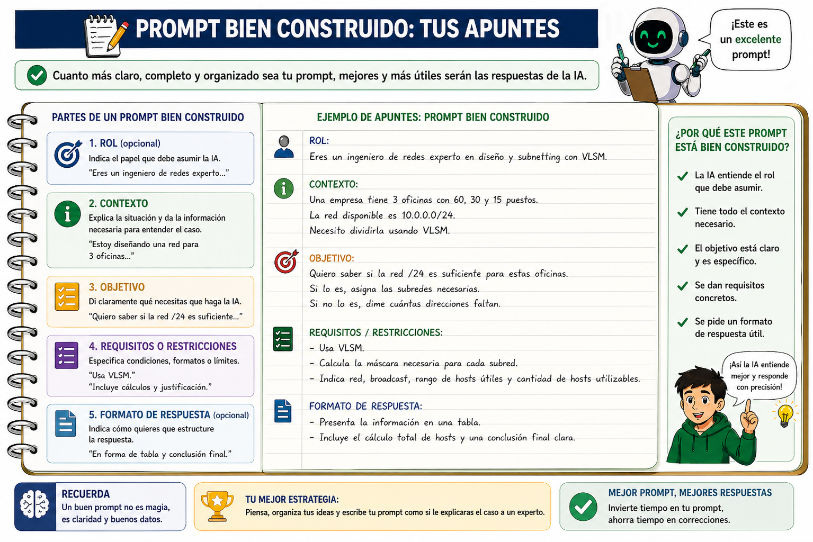

CÓMO APRENDER CON IA. LOS PRINCIPIOS¶
Estos apuntes son material de referencia permanente durante toda la secuencia de enrutamiento dinámico. Los explicamos en clase al inicio de la secuencia (actividad A0) y los tienes accesibles en el aula virtual para que vuelvas a ellos cada vez que vayas a hacer un prompt en los labs siguientes.
No son apuntes sobre redes. Son apuntes sobre cómo usar la IA mientras aprendes redes, que es un tema distinto y, en muchos sentidos, anterior. Si los aplicas, la IA te acelera la comprensión. Si no los aplicas, la IA te resuelve los ejercicios y tú no aprendes.
El problema que resolvemos¶
Una herramienta de IA (ChatGPT, Claude, Gemini, Copilot…) puede darte la respuesta correcta a casi cualquier ejercicio del módulo en menos de 10 segundos. Eso no es bueno ni malo en sí mismo: depende de qué le preguntes y de qué hagas con lo que te devuelva.
Hay dos formas de usar la IA:
| Forma | Qué le pides | Qué pasa con tu aprendizaje |
|---|---|---|
| Como atajo | "Resuélveme esto" | La IA hace el trabajo. Tú no entiendes nada. Cuando te enfrentes a un caso real en el trabajo, no sabrás afrontarlo. |
| Como tutor | "Ayúdame a entender esto" | La IA te explica el concepto. Tú haces el trabajo y aprendes. Cuando te enfrentes a un caso real en el trabajo, sabrás adaptar lo aprendido. |
La diferencia entre las dos formas no está en si usas IA o no — está en cómo formulas el prompt. Y ese es uno de los objetivos de aprendizaje los contendidos de esta UT.
Los cuatro principios¶
Cada vez que vayas a escribir un prompt sobre las prácticas de clase, comprueba que cumple los cuatro principios. Si un prompt falla en cualquiera de ellos, reescríbelo antes de enviarlo.

Principio 1 — Pide entender, no resolver¶
El verbo del prompt importa. "Resuélveme", "hazme", "dame los comandos" te dan resultado pero no aprendizaje. "Explícame por qué", "qué pasa si", "cómo se relaciona X con Y" te dan comprensión.
Prompt orientado a entender:
"En las prácticas anteriores configuré rutas estáticas con
'ip route 0.0.0.0 0.0.0.0 192.168.1.1' y se llaman ruta por defecto.
¿Cómo decide el router cuándo usar la ruta por defecto y cuándo usar otra
ruta más específica? Explícame el orden de prioridad y por qué se diseñó así."
Este prompt no te da los comandos para configurar la ruta por defecto (ya los conoces). Te da la idea de cómo funciona la elección de ruta cuando un router tiene varias candidatas. Es justo la idea que vas a necesitar en los próximos labs cuando aparezcan rutas aprendidas dinámicamente que compiten con las que tú has configurado a mano.
Mala práctica: el prompt que pide la solución directa
## Incorrecto: la IA te da la configuración funcional pero tú no entiendes qué hace cada comando ni por qué tu router elige una ruta y no otra
"Dame los comandos de enrutamiento estático para una topología de 3 routers
en línea con redes 192.168.1.0/24, 192.168.2.0/24 y 192.168.3.0/24."
## Correcto
"Tengo 3 routers en línea con redes 192.168.1.0/24, 192.168.2.0/24 y
192.168.3.0/24. He configurado las rutas estáticas necesarias. ¿Cómo decide
cada router qué interfaz de salida usar para llegar a una red que no está
directamente conectada? Explícame el proceso paso a paso."
Por qué este prompt es correcto: cumple los cuatro principios. Pide explicación del proceso de decisión, no comandos (P1). Incluye contexto propio — 3 routers en línea, direcciones reales y estado actual de la configuración (P2). El "paso a paso" deja claro que quieres el razonamiento del router, no solo el resultado (P3). Y la respuesta es verificable contra tu propia tabla show ip route: si la IA inventa el orden de decisión, lo cazas en 30 segundos (P4).
Principio 2 — Incluye tu contexto¶
Un prompt sin contexto fuerza a la IA a darte una respuesta de manual. Un prompt con tu topología, tus direcciones, tu error concreto fuerza a la IA a razonar sobre tu caso.
Esto tiene tres efectos: (1) la respuesta te sirve directamente sin tener que adaptarla; (2) detectas mucho antes si la IA está alucinando porque sus afirmaciones se contrastan con datos que tú ves; (3) si después necesitas releerla, la respuesta tiene tus datos concretos y no un párrafo genérico que podría haber dado sobre cualquier red.
Prompt con contexto propio:
"Una empresa tiene 3 oficinas con 60, 30 y 15 puestos. Tengo que hacer un
VLSM partiendo de la red 10.0.0.0/24, pero no estoy seguro de si /24 me
da suficientes direcciones para todas las subredes. ¿Cómo puedo saber si
la red de partida me llega antes de ponerme a hacer el reparto?"
Pega siempre los datos reales con los que estás trabajando (las cifras concretas de hosts y la red de partida). Reescribirlos en abstracto borra la información que necesita la IA para razonar sobre tu caso.
Pega los datos, no los describas
Es más rápido pegar el enunciado con los hosts y la red de partida que decir "estoy haciendo un VLSM y no sé si me llega". La IA va a poder ayudarte a decidir solo si ve los números concretos.
Mala práctica: prompt genérico sin tu caso
Principio 3 — Pide proceso, no producto final¶
Cuando le pides a la IA "el resultado", recibes el resultado. Cuando le pides "los pasos del razonamiento", recibes el razonamiento — y eso te enseña a hacerlo tú la próxima vez.
Prompt orientado al proceso:
"Quiero convertir la notación CIDR /28 a máscara decimal punteada. Explícame
el procedimiento paso a paso: cómo se reparte el /28 entre en el último octeto
en binario y cómo se obtiene la máscara decimal a partir de ahí. No me des
solo el resultado final."
Para conceptos calculables (subnetting, VLSM, conversiones de máscara), pedir el proceso es además una defensa contra alucinaciones: los LLMs cometen errores aritméticos con frecuencia, y si te dan solo el número final no lo detectas. Si te dan el procedimiento, contrastas cada paso con tu cálculo a mano.
Para cálculos, pide siempre el procedimiento
Subnetting, VLSM, conversiones CIDR↔máscara decimal, cálculo de hosts útiles. La IA falla en aritmética binaria con más frecuencia de la que parece. Si pides el procedimiento, ves el error en cuanto aparece.
Mala práctica: prompt que pide solo el resultado

Principio 4 — Verifica antes de aceptar¶
La IA se equivoca. A veces de forma sutil — un número mal calculado, un comando que no existe en la versión de IOS de Packet Tracer, o una explicación que suena correcta pero dice lo contrario de lo que en realidad pasa (por ejemplo: "una máscara más larga abarca más direcciones", cuando es justo al revés — /27 abarca menos direcciones que /24).
Tu trabajo es comprobar lo que te devuelve antes de incorporarlo a tus recursos y prácticas.
Qué es una alucinación, por qué se produce y dónde mirar primero
Una alucinación es una respuesta de la IA que suena coherente y bien redactada pero es falsa: un comando de Cisco PT que no existe (con su sintaxis y todo), un cálculo de máscara que no cuadra, un nombre de protocolo que se ha inventado, una explicación al revés (por ejemplo, decir que un router elige primero la ruta con mayor distancia administrativa cuando es justo al contrario). No es un fallo ocasional ni un error al generar la salida; es algo que va con la herramienta, no algo que se pueda quitar con una actualización.
Se produce porque un LLM no consulta una base de datos de hechos: predice la siguiente palabra más probable a partir del contexto que le has dado. Cuando la respuesta correcta no está bien representada en sus datos de entrenamiento, el modelo no dice "no lo sé" — sigue prediciendo palabras plausibles, y sale algo que parece una respuesta pero no lo es.
No hace falta verificarlo todo con la misma intensidad: hay sitios donde la alucinación es mucho más probable. Concentra la sospecha aquí:
- Cálculos numéricos: la IA "predice" un resultado plausible en vez de calcularlo.
- Detalles muy específicos (versiones concretas de software, comandos poco frecuentes, números de RFC, fechas).
- Preguntas sobre tu escenario cuando no le has dado los datos: la IA rellena los huecos con suposiciones que parecen razonables.
La consecuencia práctica: cuanto más segura suene una afirmación, más necesario es verificarla. Una alucinación nunca viene con una advertencia.

Cómo verificar, por orden de fiabilidad:
- Ejecutándolo en el entorno de trabajo Por ejemplo en Packet tracer, o en Ubuntu Server. Si la IA te dice un comando o una configuración, prúebalo. Si funciona, anota qué hace. Si no funciona, te ahorras escribir teoría falsa en tus apuntes o pasos incorrectos en las prácticas.
- Calculando a mano. Para todo lo aritmético (subnetting, VLSM, conversiones de máscara, cálculo de hosts útiles), recalcula tú con lápiz y papel. Si coincide, vale. Si no coincide, una de las dos partes (la IA o tú) se ha equivocado, y tienes que averiguar cuál. Esta regla se aplica también a los cálculos nuevos que aparezcan más adelante en la secuencia.
- Cruzando con material del módulo. Si una afirmación de la IA contradice los apuntes oficiales del módulo o la chuleta de comandos de Cisco IOS, prevalece el material del módulo.
- Cruzando con otro prompt. Si tienes una respuesta que no puedes verificar de las formas anteriores, pídele a la IA la explicación contraria o un contraejemplo. Las alucinaciones suelen caerse cuando se les pide consistencia.
Si la IA te da números, contrasta antes de aceptarlos
Sí, recalcular a mano da pereza. Dos formas de verificar sin recalcular desde cero:
- Pídele a la IA que se verifique a sí misma. Abre un chat nuevo (sin el contexto anterior) y pega solo el resultado: "He visto este cálculo: /28 = 255.255.255.240. ¿Es correcto? Verifícalo paso a paso desde cero, sin asumir que el resultado anterior sea válido." Si en el segundo intento sale otro número, ya tienes el aviso. Funciona porque sin tu contexto previo la IA no puede repetir su propio error con la misma "convicción".
- Compáralo con un caso que ya conoces. Si la IA dice que /27 tiene 30 hosts útiles, contrástalo mentalmente con /24 (que sabes que tiene 254): la regla "restar 2 del total" tiene que dar lo mismo en ambos casos. Si no encaja, hay error.
Argumento honesto: 30 segundos de verificación ahora te ahorran una hora persiguiendo un fallo (en Packet Tracer, en un script de Python, en el servidor de prácticas…) que en realidad venía de un cálculo o un comando mal dado por la IA. La pereza tiene su precio; la pereza inteligente tiene recompensa.
Cada vez que detectes un error en una respuesta de la IA, anótalo: qué le preguntaste, qué te respondió, qué estaba mal y cómo te diste cuenta. Esa anotación es lo que demuestra que estás verificando — y es información que te será útil más adelante para no volver a cometer el mismo tipo de prompt que te llevó al error.
Mala práctica: copiar y pegar la respuesta directamente a los apuntes
## Incorrecto: aceptas la respuesta sin verificar y la copias tal cual a tus apuntes; si la IA se ha equivocado, el error queda en tu material de estudio para siempre
Prompt: "Explícame cómo se calcula el número de hosts útiles a partir de la máscara."
[Respuesta de la IA]
→ Copiar y pegar en apuntes.
## Correcto
Prompt: "Explícame cómo se calcula el número de hosts útiles a partir de la máscara."
[Respuesta de la IA]
→ Verificar con un caso del que conoces el resultado (p. ej. /24 = 254 hosts útiles).
→ Si el procedimiento que describe la IA aplicado a /24 no da 254, hay un error.
→ Reformular con tus palabras y un ejemplo propio en la sección de apuntes o de la práctica correspondiente.

Escribir un buen prompt — plantilla práctica¶
Cuando estés bloqueado escribiendo un prompt, usa esta plantilla y rellena los huecos. No es la única forma de hacer un prompt bueno, pero garantiza que cumple los cuatro principios.
[CONTEXTO]
Estoy en la práctica {Ax} de esta secuencia {descripción breve de prácticas anteriores y lo que estoy haciendo en la actual}
Mi escenario es: {breve descripción del problema, topología, código, comando que estoy ejecutando…}.
Mi direccionamiento: {pega tu VLSM o el plan de direcciones}.
Lo que veo: {pega la salida real de show ip route, show ip protocols,
ping, traceroute, o el mensaje de error}.
[LO QUE NO ENTIENDO]
Esperaba ver {tu predicción} y estoy viendo {lo que sale realmente}.
Sospecho que tiene que ver con {tu hipótesis, si la tienes}.
[QUÉ TE PIDO]
Explícame paso a paso {el concepto} para que entienda por qué pasa lo
que pasa. No me des los comandos para arreglarlo, dame el modelo
mental para que los pueda deducir yo.
Esta plantilla es larga a propósito. Un prompt bien construido casi siempre es más largo que el prompt malo equivalente. Es lo que evita las respuestas de manual.
Ejemplo: prompt construido con la plantilla¶
Como ejemplo de aplicación, imagina un escenario que ya conoces de las prácticas anteriores: tres routers con enrutamiento estático y un PC que no consigue hacer ping a un destino remoto. Aplicas la plantilla:
[CONTEXTO]
Estoy revisando una topología de tres routers en línea R1—R2—R3 con enrutamiento estático.
Direccionamiento: R1 tiene una LAN 192.168.1.0/24, R3 tiene una LAN 192.168.3.0/24.
Las redes punto punto entre routers son /30.
He configurado las rutas estáticas en los tres routers:
R1: ip route 192.168.3.0 255.255.255.0 10.0.0.2
R2: ip route 192.168.1.0 255.255.255.0 10.0.0.1
ip route 192.168.3.0 255.255.255.0 10.0.0.6
R3: ip route 192.168.1.0 255.255.255.0 10.0.0.5
Desde un PC en la LAN de R1 hago ping a un PC de la LAN de R3 y la
respuesta es "Request timed out".
[LO QUE NO ENTIENDO]
Esperaba que el ping funcionara: las rutas están en los tres routers
y los enlaces punto punto están operativos (lo veo con show ip interface brief).
Sospecho que el problema puede estar en el camino de vuelta del ping, pero
no sé cómo confirmarlo.
[QUÉ TE PIDO]
Explícame qué cosas concretas tendría que comprobar para diagnosticar
si el problema es de ida, de vuelta, o de configuración del PC. No me
des la solución; dame la lista de comprobaciones que haría un técnico,
en orden de probabilidad, y qué comando usaría para verificar cada una.

La respuesta a este prompt es una guía de diagnóstico aplicable a tu caso. Te enseña a pensar como un administrador de red. La respuesta al prompt malo equivalente ("mi ping no funciona, arréglalo") te daría una lista genérica de soluciones que no sabrías cuál aplicar.
Cómo registrar tu uso de la IA en esta unidad¶
Conviene separar dos cosas en tu material de trabajo:
- Lo que aprendes (conceptos, definiciones con tus palabras, procedimientos, ejemplos resueltos). Va en tus apuntes de la materia que estés estudiando, sea cual sea. Usaremos un documento plantilla que iras completando.
- Cómo lo aprendiste (qué le preguntaste a la IA, qué te respondió, qué tuviste que corregir, qué decidiste no aceptar). Va en un registro aparte, distinto de los apuntes.
¿Por qué separarlos? Porque cumplen funciones distintas. Los apuntes los consultarás en el futuro como referencia técnica, y deberían contener solo aquello que has comprobado que es cierto. El registro de uso de IA captura el proceso de aprendizaje y te sirve para ti: para detectar tus propios patrones — qué tipo de prompts te funcionan, en qué temas la IA suele equivocarte, qué malas costumbres tienes que corregir.
Un registro de uso de IA mínimamente útil contiene tres cosas:
- Tus principios de uso (los que has hecho tuyos al leer estos apuntes). Releelos antes de cada sesión de trabajo con IA.
- Los prompts que has usado y por qué los formulaste así. Pega el prompt exacto que escribiste — si era malo, déjalo y explica por qué — y di qué buscabas con esa formulación.
- Los errores que has detectado en respuestas de la IA. Qué le preguntaste, qué te respondió, qué estaba mal, cómo lo verificaste.
No idealices los prompts a la hora de registrarlos. Si escribiste un prompt malo y luego te diste cuenta, anota el original tal cual y explica por qué fue mal y cómo lo reformulaste. Un mal prompt corregido enseña mucho más que fingir que solo escribiste prompts perfectos.

Resumen final¶
Cuando vayas a usar la IA en cualquier práctica, comprueba estos cuatro puntos antes de enviar el prompt:
| Comprobación | Pregúntate |
|---|---|
| Pide entender | ¿El verbo es "explícame", "por qué", "cómo", "qué pasa si"? Si es "resuelve", "dame", "hazme" → reescribe. |
| Incluye tu contexto | ¿He pegado mi VLSM, mi salida real, mi mensaje de error? Si es genérico → añade contexto. |
| Pide proceso | ¿Pido los pasos del razonamiento? Si solo pido el resultado final → añade "explícamelo paso a paso". |
| Verificable | ¿Voy a poder comprobar la respuesta — ejecutándola, recalculándola a mano o cruzándola con material de la asignatura? Si no → reformula para hacerla verificable. |
Si los cuatro están en verde, envíalo. Si alguno falla, reescribe.
A partir de A1 te apoyas también en el manual de técnicas, que recoge gestos concretos para aplicar estos cuatro principios. No vas a usar todas: cada lab introducirá las que encajen con su tarea.